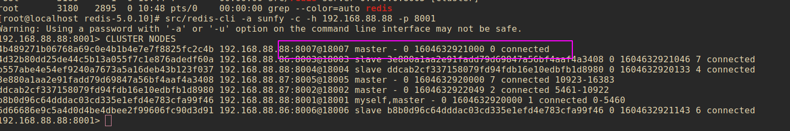

src/redis-cli -a [password] --cluster add-node [要添加的ip:端口号] [集群内任一节点ip：端口号]
此刻可以查看集群节点信息内已经可以看到新增节点信息，新加入节点都是master节点

新加入节点并不能直接使用，因为新加入节点没有hash槽，接下来就是分配hash槽
1 2 3 4 5 6 7 8 9 10
src/redis-cli -a [password] --cluster reshard [集群内任一节点ip：端口号] How many slots do you want to move (from 1 to 16384)? [输入要给新加入节点分配的槽位个数] What is the receiving node ID? [待分配槽位节点ID] Please enter all the source node IDs. Type 'all' to use all the nodes as source nodes for the hash slots. Type 'done' once you entered all the source nodes IDs. [输入all会从所有主节点中抽取槽位，分配给新节点] Source node 1:all Do you want to proceed with the proposed reshard plan (yes/no)? yes 随后等待分配槽位完成
src/redis-cli -a [password] --cluster del-node [要删除节点ip:端口] [删除节点id]
删除主节点之前需要将主节点的槽位转移给别的槽位，如下操作
1 2 3 4 5 6 7 8 9 10 11 12
src/redis-cli -a [password] --cluster reshard [要转移槽位节点ip:端口] [转移槽位节点id] How many slots do you want to move (from 1 to 16384)? [转移槽位个数] What is the receiving node ID? [将槽位转移到哪个节点的id] Please enter all the source node IDs. Type 'all' to use all the nodes as source nodes for the hash slots. Type 'done' once you entered all the source nodes IDs. Source node 1:[待转移槽位的id] Source node 2:done (ps:这里直接输入done 开始生成迁移计划) ... ... Do you want to proceed with the proposed reshard plan (yes/no)? Yes (ps:这里输入yes开始迁移)

Copyright 2021 sunfy.top ALL Rights Reserved